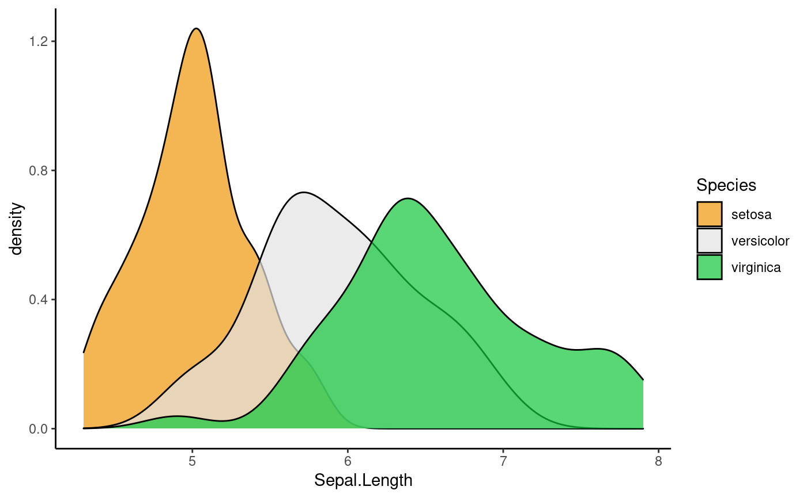
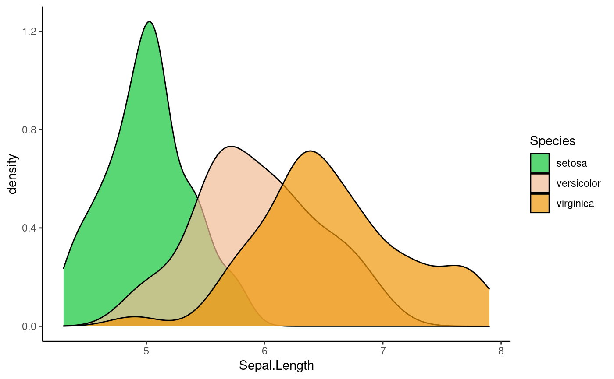

scale_colour_discrete_diverging.RdDiscrete ggplot2 color scales using the color palettes generated by diverging_hcl.
scale_colour_discrete_diverging(palette = NULL, c1 = NULL, cmax = NULL, l1 = NULL, l2 = NULL, h1 = NULL, h2 = NULL, p1 = NULL, p2 = NULL, alpha = 1, rev = FALSE, nmax = NULL, order = NULL, aesthetics = "colour", ...) scale_color_discrete_diverging(palette = NULL, c1 = NULL, cmax = NULL, l1 = NULL, l2 = NULL, h1 = NULL, h2 = NULL, p1 = NULL, p2 = NULL, alpha = 1, rev = FALSE, nmax = NULL, order = NULL, aesthetics = "colour", ...) scale_fill_discrete_diverging(..., aesthetics = "fill")
| palette | The name of the palette to be used. Run |
|---|---|
| c1 | Chroma value at the scale endpoints. |
| cmax | Maximum chroma value. |
| l1 | Luminance value at the scale endpoints. |
| l2 | Luminance value at the scale midpoint. |
| h1 | Hue value at the first endpoint. |
| h2 | Hue value at the second endpoint. |
| p1 | Control parameter determining how chroma should vary (1 = linear, 2 = quadratic, etc.). |
| p2 | Control parameter determining how luminance should vary (1 = linear, 2 = quadratic, etc.). |
| alpha | Numeric vector of values in the range |
| rev | If |
| nmax | Maximum number of different colors the palette should contain. If not provided, is calculated automatically from the data. |
| order | Numeric vector listing the order in which the colors should be used. Default is |
| aesthetics | The ggplot2 aesthetics to which this scale should be applied. |
| ... | common discrete scale parameters: |
If both a valid palette name and palette parameters are provided then the provided palette parameters overwrite the parameters in the named palette. This enables easy customization of named palettes.
library("ggplot2") # default colors with slightly darkened midpoint ggplot(iris, aes(Sepal.Length, Sepal.Width, color = Species)) + geom_point() + theme_minimal() + scale_color_discrete_diverging(l2=75)# color scale "Green-Orange" ggplot(iris, aes(Sepal.Length, fill = Species)) + geom_density(alpha = 0.7) + theme_classic() + scale_fill_discrete_diverging(palette = "Green-Orange", rev = TRUE)# use `nmax` and `order` to skip some colors ggplot(iris, aes(Sepal.Length, fill = Species)) + geom_density(alpha = 0.7) + theme_classic() + scale_fill_discrete_diverging(palette = "Green-Orange", nmax = 5, order = c(1, 4, 5))